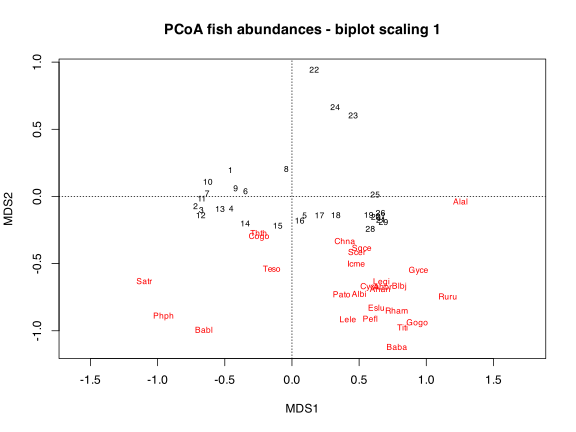
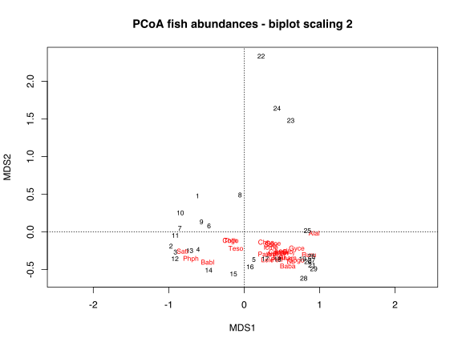
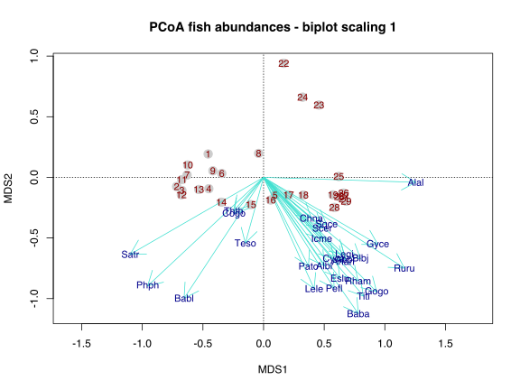
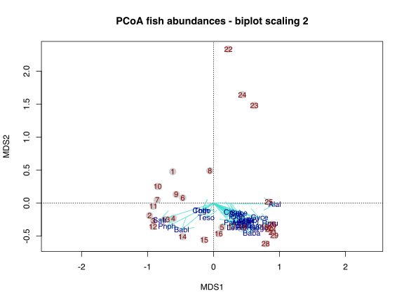

10. Principal Coordinate Analysis (PCoA)
![]()
| Type | Name | Link |
|---|---|---|
| Slides | CA lecture slides | 💾 BCB743_10_PCoA.pdf |
| Data | The Doubs River data | 💾 Doubs.RData |
| The seaweed environmental data | 💾 SeaweedEnv.RData |
|
| The seaweed bioregion classification |
💾 bioregions.csv. |
Rather than using raw data as in a CA, PCoA takes a (dis)similarity matrix as input; in other words, any of the dissimilarities calculated by vegan’s vegdist() function can be used, which is great as they are well-suited to species data. If dissimilarities are Euclidean distances, then PCoA is equal to PCA. Another thing that makes a PCoA more useful is that (dis)similarity matrices calculated from quantitative, semi-quantitative, qualitative, and mixed variables can be handled.
PCoA scaling takes a set of dissimilarities and returns a set of points such that when plotted in 2D or 3D space the distances between the points are approximately equal to the dissimilarities. In other words, it tries to represent species dissimilarities as Euclidean distances.
1 Set-up the analysis environment
2 The Doubs River data
We continue to use the species data:
3 Calculate a suitable dissimilarity matrix
You may or may not want to calculate a dissimilarity index upfront (see below). Here I calculate the Bray-Curtis dissimilarity which is appropriate for abundance data:
spe_bray <- vegdist(spe)4 Do the PCoA
The book Numerical Ecology in R uses a built-in function cmdscale() or the function pcoa() in ape for its PCoA calculation. The vegan function capscale() can also be used for PCoA, and this is the approach I take here. The ‘CAP’ in capscale() stands for ‘Canonical Analysis of Principal Coordinates’. capscale() works differently from rda() or cca() in that we can only specify the input via a formula interface. See ?capscale for information. To run a PCoA without constraints we use 1 on the righthand side of the formula, with the dissimilarity matrix on the left. Here is how, and i give three options for doing the analysis:
4.1 Option 1—supply a precalculated dissimilarity matrix
# spe_pcoa <- cmdscale(spe_bray, k = nrow(spe) - 1, eig = TRUE)
spe_pcoa <- capscale(spe_bray ~ 1)
spe_pcoaCall: capscale(formula = spe_bray ~ 1)
Inertia Rank
Total 6.7621
Unconstrained 7.0583 17
Imaginary -0.2963 11
Inertia is squared Bray distance
Eigenvalues for unconstrained axes:
MDS1 MDS2 MDS3 MDS4 MDS5 MDS6 MDS7 MDS8
3.695 1.098 0.710 0.415 0.305 0.192 0.157 0.132
(Showing 8 of 17 unconstrained eigenvalues)When we do a summary() of the output we see that the results are similar to that of PCA and CA, but the Species scores are missing because information about original variables (species) are not available. This is due to the fact that in this instance input into capscale() was the square (site × site) dissimilarity matrix produced from the species table, not the raw species table itself. Here is the output:
summary(spe_pcoa)
Call:
capscale(formula = spe_bray ~ 1)
Partitioning of squared Bray distance:
Inertia Proportion
Total 7.058 1
Unconstrained 7.058 1
Eigenvalues, and their contribution to the squared Bray distance
Importance of components:
MDS1 MDS2 MDS3 MDS4 MDS5 MDS6 MDS7
Eigenvalue 3.6953 1.0985 0.7105 0.41497 0.30456 0.19179 0.15697
Proportion Explained 0.5235 0.1556 0.1007 0.05879 0.04315 0.02717 0.02224
Cumulative Proportion 0.5235 0.6792 0.7798 0.83862 0.88177 0.90894 0.93118
MDS8 MDS9 MDS10 MDS11 MDS12 MDS13
Eigenvalue 0.13191 0.12943 0.08668 0.046158 0.038645 0.02746
Proportion Explained 0.01869 0.01834 0.01228 0.006539 0.005475 0.00389
Cumulative Proportion 0.94987 0.96820 0.98048 0.987023 0.992498 0.99639
MDS14 MDS15 MDS16 MDS17
Eigenvalue 0.013065 0.007088 0.0040395 0.0013006
Proportion Explained 0.001851 0.001004 0.0005723 0.0001843
Cumulative Proportion 0.998239 0.999243 0.9998157 1.0000000
Scaling 2 for species and site scores
* Species are scaled proportional to eigenvalues
* Sites are unscaled: weighted dispersion equal on all dimensions
* General scaling constant of scores: 3.70945
Species scores
MDS1 MDS2 MDS3 MDS4 MDS5 MDS6
Dim1
Dim2
Dim3
Dim4
Dim5
Dim6
Dim7
Dim8
Dim9
Dim10
Dim11
Dim12
Dim13
Dim14
Dim15
Dim16
Dim17
Site scores (weighted sums of species scores)
MDS1 MDS2 MDS3 MDS4 MDS5 MDS6
1 -0.61833 0.47814 -2.68647 -0.008979 0.75432 0.287801
2 -0.97007 -0.18831 -0.50647 -0.747940 -0.24523 0.552569
3 -0.91095 -0.26725 -0.11086 -0.269204 0.59014 0.495686
4 -0.61035 -0.23286 0.24092 -0.369601 0.87393 -0.003802
5 0.12850 -0.36697 0.27123 -1.021930 1.00975 -1.813872
6 -0.46630 0.07903 0.51793 -0.574116 1.09111 0.175131
7 -0.85286 0.04856 0.08616 -0.345653 0.43990 0.118891
8 -0.05527 0.49066 0.83491 -2.293328 -1.49393 -0.171486
9 -0.56550 0.13337 0.88932 -0.692163 0.27050 0.509773
10 -0.84664 0.25300 -0.67671 0.118437 -0.50196 -0.383681
11 -0.91233 -0.04658 0.02921 0.193696 -0.79675 -0.020530
12 -0.91757 -0.35596 -0.34803 0.860325 -1.07274 -0.143379
13 -0.72310 -0.24814 0.33714 1.141654 -0.35503 0.107426
14 -0.47027 -0.50795 0.57853 0.697808 -0.30231 -0.444267
15 -0.14181 -0.55761 0.65846 0.872479 0.53048 -0.528434
16 0.07838 -0.46361 0.58811 0.933646 -0.41813 0.177637
17 0.27874 -0.35778 0.64505 0.700157 -0.43702 0.119531
18 0.44306 -0.36281 0.68911 0.265521 0.52313 0.656374
19 0.77381 -0.35859 0.09935 -0.155020 -0.01502 0.452721
20 0.84592 -0.39536 -0.21418 -0.074459 0.11215 0.152485
21 0.89761 -0.44152 -0.41707 -0.197719 -0.11940 -0.333680
22 0.22493 2.33322 0.02727 0.445114 -0.84537 -1.488871
23 0.61758 1.47945 0.13437 0.181825 -0.49401 2.022706
24 0.43613 1.64121 0.48842 0.751905 1.60371 -0.426384
25 0.83875 0.01829 -0.02959 -0.091501 0.36656 0.905801
26 0.89258 -0.32152 -0.38210 -0.156756 -0.04914 0.197682
27 0.89317 -0.37681 -0.47566 -0.274907 -0.19793 -0.007757
28 0.79006 -0.61545 -0.54558 0.100449 -0.58864 -0.580587
29 0.92215 -0.48985 -0.72275 0.010259 -0.23308 -0.585482
4.2 Option 2—supply the raw data to capscale()
We can provide the raw species table instead and request that capscale() calculates the required dissimilarity indices by automagically calling vegdist(). The advantage of this approach is that it adds species scores as weighted sums of (residual) community matrix, whereas only providing the pre-calculated dissimilarity matrix provides no fixed method for adding species scores. I advocate providing a raw species table to capscale() to retain the species information. This avoids many problems later on, such as having to calculate the weighted species scores ourselves.
spe_pcoa <- capscale(spe ~ 1, distance = "bray")
spe_pcoaCall: capscale(formula = spe ~ 1, distance = "bray")
Inertia Rank
Total 6.7621
Unconstrained 7.0583 17
Imaginary -0.2963 11
Inertia is squared Bray distance
Species scores projected from 'spe'
Eigenvalues for unconstrained axes:
MDS1 MDS2 MDS3 MDS4 MDS5 MDS6 MDS7 MDS8
3.695 1.098 0.710 0.415 0.305 0.192 0.157 0.132
(Showing 8 of 17 unconstrained eigenvalues)summary() now produces a familiar and more complete output:
summary(spe_pcoa)
Call:
capscale(formula = spe ~ 1, distance = "bray")
Partitioning of squared Bray distance:
Inertia Proportion
Total 7.058 1
Unconstrained 7.058 1
Eigenvalues, and their contribution to the squared Bray distance
Importance of components:
MDS1 MDS2 MDS3 MDS4 MDS5 MDS6 MDS7
Eigenvalue 3.6953 1.0985 0.7105 0.41497 0.30456 0.19179 0.15697
Proportion Explained 0.5235 0.1556 0.1007 0.05879 0.04315 0.02717 0.02224
Cumulative Proportion 0.5235 0.6792 0.7798 0.83862 0.88177 0.90894 0.93118
MDS8 MDS9 MDS10 MDS11 MDS12 MDS13
Eigenvalue 0.13191 0.12943 0.08668 0.046158 0.038645 0.02746
Proportion Explained 0.01869 0.01834 0.01228 0.006539 0.005475 0.00389
Cumulative Proportion 0.94987 0.96820 0.98048 0.987023 0.992498 0.99639
MDS14 MDS15 MDS16 MDS17
Eigenvalue 0.013065 0.007088 0.0040395 0.0013006
Proportion Explained 0.001851 0.001004 0.0005723 0.0001843
Cumulative Proportion 0.998239 0.999243 0.9998157 1.0000000
Scaling 2 for species and site scores
* Species are scaled proportional to eigenvalues
* Sites are unscaled: weighted dispersion equal on all dimensions
* General scaling constant of scores: 3.70945
Species scores
MDS1 MDS2 MDS3 MDS4 MDS5 MDS6
Cogo -0.1806 -0.12166 0.12009 0.318345 -0.20896 -0.0628447
Satr -0.8126 -0.25562 -0.09466 0.189816 0.03958 -0.0205182
Phph -0.7065 -0.36074 0.40967 0.148161 0.04256 0.0044487
Babl -0.4844 -0.40185 0.63024 -0.015441 0.20424 0.0984599
Thth -0.1828 -0.11133 0.04616 0.308605 -0.30549 -0.0404440
Teso -0.1110 -0.21839 0.23781 0.435940 -0.10805 -0.0970663
Chna 0.2912 -0.13557 -0.04331 0.028119 -0.06114 0.0808072
Pato 0.2740 -0.29530 0.13661 0.259197 -0.04269 -0.0170839
Lele 0.3080 -0.37006 0.20073 0.081605 0.23066 -0.3057908
Sqce 0.3846 -0.15729 0.17876 -0.240323 -0.28958 -0.0902284
Baba 0.5774 -0.45316 -0.07739 0.191930 -0.18527 -0.0243514
Albi 0.3698 -0.29397 -0.01089 0.179049 -0.14466 -0.0098897
Gogo 0.6896 -0.38070 -0.05647 0.064552 0.13137 -0.0511734
Eslu 0.4650 -0.33541 -0.14921 -0.092236 0.17152 -0.2225910
Pefl 0.4301 -0.36860 -0.08225 -0.056223 0.07008 -0.2628469
Rham 0.5761 -0.34405 -0.23487 0.010991 -0.16096 -0.0231124
Legi 0.4925 -0.25771 -0.20414 0.019508 -0.14985 0.0094055
Scer 0.3579 -0.16837 -0.16318 -0.069449 0.05846 -0.1482742
Cyca 0.4281 -0.27220 -0.20946 0.020683 -0.11845 -0.0814711
Titi 0.6089 -0.39474 -0.13588 -0.190483 0.07140 -0.1149085
Abbr 0.4992 -0.27219 -0.30006 -0.055196 -0.10996 -0.0667655
Icme 0.3542 -0.20318 -0.27335 -0.035675 -0.13817 -0.1136177
Gyce 0.6967 -0.22339 -0.32474 -0.034739 -0.11643 0.0801622
Ruru 0.8579 -0.30169 -0.02533 -0.341579 -0.09109 -0.1013461
Blbj 0.5909 -0.27102 -0.33322 -0.074650 -0.14314 0.0005328
Alal 0.9276 -0.01657 -0.20241 0.112213 -0.10829 0.2386945
Anan 0.4853 -0.27931 -0.24261 -0.007294 -0.14271 -0.0349343
Site scores (weighted sums of species scores)
MDS1 MDS2 MDS3 MDS4 MDS5 MDS6
1 -0.61833 0.47814 -2.68647 -0.008979 0.75432 0.287801
2 -0.97007 -0.18831 -0.50647 -0.747940 -0.24523 0.552569
3 -0.91095 -0.26725 -0.11086 -0.269204 0.59014 0.495686
4 -0.61035 -0.23286 0.24092 -0.369601 0.87393 -0.003802
5 0.12850 -0.36697 0.27123 -1.021930 1.00975 -1.813872
6 -0.46630 0.07903 0.51793 -0.574116 1.09111 0.175131
7 -0.85286 0.04856 0.08616 -0.345653 0.43990 0.118891
8 -0.05527 0.49066 0.83491 -2.293328 -1.49393 -0.171486
9 -0.56550 0.13337 0.88932 -0.692163 0.27050 0.509773
10 -0.84664 0.25300 -0.67671 0.118437 -0.50196 -0.383681
11 -0.91233 -0.04658 0.02921 0.193696 -0.79675 -0.020530
12 -0.91757 -0.35596 -0.34803 0.860325 -1.07274 -0.143379
13 -0.72310 -0.24814 0.33714 1.141654 -0.35503 0.107426
14 -0.47027 -0.50795 0.57853 0.697808 -0.30231 -0.444267
15 -0.14181 -0.55761 0.65846 0.872479 0.53048 -0.528434
16 0.07838 -0.46361 0.58811 0.933646 -0.41813 0.177637
17 0.27874 -0.35778 0.64505 0.700157 -0.43702 0.119531
18 0.44306 -0.36281 0.68911 0.265521 0.52313 0.656374
19 0.77381 -0.35859 0.09935 -0.155020 -0.01502 0.452721
20 0.84592 -0.39536 -0.21418 -0.074459 0.11215 0.152485
21 0.89761 -0.44152 -0.41707 -0.197719 -0.11940 -0.333680
22 0.22493 2.33322 0.02727 0.445114 -0.84537 -1.488871
23 0.61758 1.47945 0.13437 0.181825 -0.49401 2.022706
24 0.43613 1.64121 0.48842 0.751905 1.60371 -0.426384
25 0.83875 0.01829 -0.02959 -0.091501 0.36656 0.905801
26 0.89258 -0.32152 -0.38210 -0.156756 -0.04914 0.197682
27 0.89317 -0.37681 -0.47566 -0.274907 -0.19793 -0.007757
28 0.79006 -0.61545 -0.54558 0.100449 -0.58864 -0.580587
29 0.92215 -0.48985 -0.72275 0.010259 -0.23308 -0.585482
4.3 Option 3—use pre-made dissimilarity matrix and add species back using sppscores()
Another approach to add back the species information into the ordination object produced by supplying the pre-made dissimialrity matrix to capscale():
Call:
capscale(formula = spe_bray ~ 1)
Partitioning of squared Bray distance:
Inertia Proportion
Total 7.058 1
Unconstrained 7.058 1
Eigenvalues, and their contribution to the squared Bray distance
Importance of components:
MDS1 MDS2 MDS3 MDS4 MDS5 MDS6 MDS7
Eigenvalue 3.6953 1.0985 0.7105 0.41497 0.30456 0.19179 0.15697
Proportion Explained 0.5235 0.1556 0.1007 0.05879 0.04315 0.02717 0.02224
Cumulative Proportion 0.5235 0.6792 0.7798 0.83862 0.88177 0.90894 0.93118
MDS8 MDS9 MDS10 MDS11 MDS12 MDS13
Eigenvalue 0.13191 0.12943 0.08668 0.046158 0.038645 0.02746
Proportion Explained 0.01869 0.01834 0.01228 0.006539 0.005475 0.00389
Cumulative Proportion 0.94987 0.96820 0.98048 0.987023 0.992498 0.99639
MDS14 MDS15 MDS16 MDS17
Eigenvalue 0.013065 0.007088 0.0040395 0.0013006
Proportion Explained 0.001851 0.001004 0.0005723 0.0001843
Cumulative Proportion 0.998239 0.999243 0.9998157 1.0000000
Scaling 2 for species and site scores
* Species are scaled proportional to eigenvalues
* Sites are unscaled: weighted dispersion equal on all dimensions
* General scaling constant of scores: 3.70945
Species scores
MDS1 MDS2 MDS3 MDS4 MDS5 MDS6
Cogo -0.1806 -0.12166 0.12009 0.318345 -0.20896 -0.0628447
Satr -0.8126 -0.25562 -0.09466 0.189816 0.03958 -0.0205182
Phph -0.7065 -0.36074 0.40967 0.148161 0.04256 0.0044487
Babl -0.4844 -0.40185 0.63024 -0.015441 0.20424 0.0984599
Thth -0.1828 -0.11133 0.04616 0.308605 -0.30549 -0.0404440
Teso -0.1110 -0.21839 0.23781 0.435940 -0.10805 -0.0970663
Chna 0.2912 -0.13557 -0.04331 0.028119 -0.06114 0.0808072
Pato 0.2740 -0.29530 0.13661 0.259197 -0.04269 -0.0170839
Lele 0.3080 -0.37006 0.20073 0.081605 0.23066 -0.3057908
Sqce 0.3846 -0.15729 0.17876 -0.240323 -0.28958 -0.0902284
Baba 0.5774 -0.45316 -0.07739 0.191930 -0.18527 -0.0243514
Albi 0.3698 -0.29397 -0.01089 0.179049 -0.14466 -0.0098897
Gogo 0.6896 -0.38070 -0.05647 0.064552 0.13137 -0.0511734
Eslu 0.4650 -0.33541 -0.14921 -0.092236 0.17152 -0.2225910
Pefl 0.4301 -0.36860 -0.08225 -0.056223 0.07008 -0.2628469
Rham 0.5761 -0.34405 -0.23487 0.010991 -0.16096 -0.0231124
Legi 0.4925 -0.25771 -0.20414 0.019508 -0.14985 0.0094055
Scer 0.3579 -0.16837 -0.16318 -0.069449 0.05846 -0.1482742
Cyca 0.4281 -0.27220 -0.20946 0.020683 -0.11845 -0.0814711
Titi 0.6089 -0.39474 -0.13588 -0.190483 0.07140 -0.1149085
Abbr 0.4992 -0.27219 -0.30006 -0.055196 -0.10996 -0.0667655
Icme 0.3542 -0.20318 -0.27335 -0.035675 -0.13817 -0.1136177
Gyce 0.6967 -0.22339 -0.32474 -0.034739 -0.11643 0.0801622
Ruru 0.8579 -0.30169 -0.02533 -0.341579 -0.09109 -0.1013461
Blbj 0.5909 -0.27102 -0.33322 -0.074650 -0.14314 0.0005328
Alal 0.9276 -0.01657 -0.20241 0.112213 -0.10829 0.2386945
Anan 0.4853 -0.27931 -0.24261 -0.007294 -0.14271 -0.0349343
Site scores (weighted sums of species scores)
MDS1 MDS2 MDS3 MDS4 MDS5 MDS6
1 -0.61833 0.47814 -2.68647 -0.008979 0.75432 0.287801
2 -0.97007 -0.18831 -0.50647 -0.747940 -0.24523 0.552569
3 -0.91095 -0.26725 -0.11086 -0.269204 0.59014 0.495686
4 -0.61035 -0.23286 0.24092 -0.369601 0.87393 -0.003802
5 0.12850 -0.36697 0.27123 -1.021930 1.00975 -1.813872
6 -0.46630 0.07903 0.51793 -0.574116 1.09111 0.175131
7 -0.85286 0.04856 0.08616 -0.345653 0.43990 0.118891
8 -0.05527 0.49066 0.83491 -2.293328 -1.49393 -0.171486
9 -0.56550 0.13337 0.88932 -0.692163 0.27050 0.509773
10 -0.84664 0.25300 -0.67671 0.118437 -0.50196 -0.383681
11 -0.91233 -0.04658 0.02921 0.193696 -0.79675 -0.020530
12 -0.91757 -0.35596 -0.34803 0.860325 -1.07274 -0.143379
13 -0.72310 -0.24814 0.33714 1.141654 -0.35503 0.107426
14 -0.47027 -0.50795 0.57853 0.697808 -0.30231 -0.444267
15 -0.14181 -0.55761 0.65846 0.872479 0.53048 -0.528434
16 0.07838 -0.46361 0.58811 0.933646 -0.41813 0.177637
17 0.27874 -0.35778 0.64505 0.700157 -0.43702 0.119531
18 0.44306 -0.36281 0.68911 0.265521 0.52313 0.656374
19 0.77381 -0.35859 0.09935 -0.155020 -0.01502 0.452721
20 0.84592 -0.39536 -0.21418 -0.074459 0.11215 0.152485
21 0.89761 -0.44152 -0.41707 -0.197719 -0.11940 -0.333680
22 0.22493 2.33322 0.02727 0.445114 -0.84537 -1.488871
23 0.61758 1.47945 0.13437 0.181825 -0.49401 2.022706
24 0.43613 1.64121 0.48842 0.751905 1.60371 -0.426384
25 0.83875 0.01829 -0.02959 -0.091501 0.36656 0.905801
26 0.89258 -0.32152 -0.38210 -0.156756 -0.04914 0.197682
27 0.89317 -0.37681 -0.47566 -0.274907 -0.19793 -0.007757
28 0.79006 -0.61545 -0.54558 0.100449 -0.58864 -0.580587
29 0.92215 -0.48985 -0.72275 0.010259 -0.23308 -0.585482We can unpack what is inside the results, and there we can see that we can access the eigenvalues as we did for PCA and CA:
str(spe_pcoa) # not shown due to length of outputThe percentage inertia explained by the first three axes is therefore:
See Numerical Ecology in R (pp. 140 to 145) for information about the interpretation of a PCoA and the ordination diagrams shown below.
5 Ordination diagrams
We create the ordination diagrammes as before:
plot(spe_pcoa, scaling = 1, main = "PCoA fish abundances - biplot scaling 1")
plot(spe_pcoa, scaling = 2, main = "PCoA fish abundances - biplot scaling 2")
Scaling 1 and scaling 2 is the same as in CA.
The plots above work okay, but we can improve them. Note that you can also apply these improvements to PCA and CA ordinations. Let us build plots from scratch:
pl1 <- ordiplot(spe_pcoa, type = "none", scaling = 1,
main = "PCoA fish abundances - biplot scaling 1")
points(pl1, "sites", pch = 21, cex = 1.75, col = "grey80", bg = "grey80")
points(pl1, "species", pch = 21, col = "turquoise", arrows = TRUE)
text(pl1, "species", col = "blue4", cex = 0.9)
text(pl1, "sites", col = "red4", cex = 0.9)
pl2 <- ordiplot(spe_pcoa, type = "none", scaling = 2,
main = "PCoA fish abundances - biplot scaling 2")
points(pl2, "sites", pch = 21, cex = 1.75, col = "grey80", bg = "grey80")
points(pl2, "species", pch = 21, col = "turquoise", arrows = TRUE)
text(pl2, "species", col = "blue4", cex = 0.9)
text(pl2, "sites", col = "red4", cex = 0.9)
We can also fit response surfaces using ordisurf():
dev.off()null device
1 require('viridis')
palette(viridis(8))
par(mar = c(4, 4, 0.9, 0.5) + .1, mfrow = c(2, 2))
with(spe, tmp <- ordisurf(spe_pcoa ~ Satr, bubble = 3,
family = quasipoisson, knots = 2, col = 6,
display = "sites", main = "Satr"))
abline(h = 0, v = 0, lty = 3)
with(spe, tmp <- ordisurf(spe_pcoa ~ Scer, bubble = 3,
family = quasipoisson, knots = 2, col = 6,
display = "sites", main = "Scer"))
abline(h = 0, v = 0, lty = 3)
with(spe, tmp <- ordisurf(spe_pcoa ~ Teso, bubble = 3,
family = quasipoisson, knots = 2, col = 6,
display = "sites", main = "Teso"))
abline(h = 0, v = 0, lty = 3)
with(spe, tmp <- ordisurf(spe_pcoa ~ Cogo, bubble = 3,
family = quasipoisson, knots = 2, col = 6,
display = "sites", main = "Cogo"))
abline(h = 0, v = 0, lty = 3)
env <- dplyr::slice(env, -8)
(spe_pcoa_env <- envfit(spe_pcoa, env, scaling = 2))
***VECTORS
MDS1 MDS2 r2 Pr(>r)
dfs 0.99710 0.07609 0.7210 0.001 ***
ele -0.99807 -0.06208 0.5659 0.001 ***
slo -0.92225 0.38660 0.1078 0.113
dis 0.99746 -0.07129 0.5324 0.003 **
pH -0.42673 -0.90438 0.0480 0.505
har 0.98804 0.15417 0.2769 0.024 *
pho 0.45343 0.89129 0.6912 0.001 ***
nit 0.86338 0.50456 0.6117 0.001 ***
amm 0.42719 0.90416 0.7076 0.001 ***
oxy -0.76847 -0.63989 0.7639 0.001 ***
bod 0.43152 0.90210 0.8561 0.001 ***
---
Signif. codes: 0 '***' 0.001 '**' 0.01 '*' 0.05 '.' 0.1 ' ' 1
Permutation: free
Number of permutations: 9996 Handling mixed variable types
To handle mixed variable types (numerical, nominal, ordinal, binary) we can use the Gower distance. We do not use vegan for this, but rather the daisy() function in cluster.
I construct a environmental dataset that contains some mixed variables by column binding a dataset of seawater temperatures and a bioregional classificationn of the 58 coastal sections (the seaweed datasets):
bioreg <- read.csv(paste0(root, "seaweed/bioregions.csv"), header = TRUE)
load(paste0(root, "seaweed/SeaweedEnv.RData"))
E <- cbind(bioreg, env) %>%
mutate(spal.prov = factor(spal.prov),
spal.ecoreg = factor(spal.ecoreg),
lombard = factor(lombard),
bolton = factor(bolton))
head(E)| spal.prov | spal.ecoreg | lombard | bolton | febMean | febMax | febMed | febX95 | febRange | augMean | augMin | augMed | augX5 | augRange | annMean | annSD | annRange | febSD | augSD | annChl | augChl | febChl |
|---|---|---|---|---|---|---|---|---|---|---|---|---|---|---|---|---|---|---|---|---|---|
| BMP | NE | NamBR | BMP | 13.00117 | 18.72044 | 12.66004 | 16.80969 | 6.070326 | 11.75228 | 9.812431 | 11.82838 | 10.12598 | 2.502092 | 12.33503 | 1.255298 | 1.2488912 | 1.625917 | 0.7665420 | 2.623040 | 11.070480 | 8.884580 |
| BMP | NE | NamBR | BMP | 13.37950 | 18.61897 | 13.18389 | 17.07242 | 5.889300 | 11.57731 | 9.739288 | 11.61312 | 10.08165 | 2.973370 | 12.38795 | 1.401646 | 1.8021850 | 1.753863 | 0.8969112 | 4.903870 | 8.760170 | 8.401560 |
| BMP | NE | NamBR | BMP | 13.36163 | 17.86458 | 13.23187 | 16.61114 | 5.431383 | 11.29382 | 9.619388 | 11.26842 | 10.01617 | 3.084130 | 12.24332 | 1.474712 | 2.0678127 | 1.703917 | 0.9408326 | 3.723187 | 8.356506 | 6.718254 |
| BMP | NE | NamBR | BMP | 13.28966 | 17.12073 | 13.10284 | 16.12137 | 5.049024 | 11.13296 | 9.567049 | 11.02333 | 10.03277 | 2.995822 | 12.15410 | 1.505176 | 2.1567012 | 1.593944 | 0.9393490 | 4.165980 | 4.164904 | 3.727157 |
| BMP | NE | NamBR | BMP | 12.81128 | 16.37829 | 12.40032 | 15.53240 | 4.977916 | 11.23448 | 9.624302 | 10.99935 | 10.17375 | 2.940255 | 11.94613 | 1.449530 | 1.5767921 | 1.517366 | 0.9542671 | 8.020257 | 8.765154 | 8.786165 |
| BMP | NE | NamBR | BMP | 12.40247 | 15.96730 | 11.75096 | 15.21999 | 5.142721 | 11.50199 | 9.757004 | 11.15880 | 10.38581 | 2.925088 | 11.83773 | 1.385862 | 0.9004776 | 1.501801 | 0.9768441 | 12.882601 | 7.591975 | 9.160030 |
str(E)'data.frame': 58 obs. of 22 variables:
$ spal.prov : Factor w/ 2 levels "AMP","BMP": 2 2 2 2 2 2 2 2 2 2 ...
$ spal.ecoreg: Factor w/ 2 levels "ABE","NE": 2 2 2 2 2 2 2 2 2 2 ...
$ lombard : Factor w/ 4 levels "ABR","NamBR",..: 2 2 2 2 2 2 2 2 2 2 ...
$ bolton : Factor w/ 4 levels "AMP","B-ATZ",..: 3 3 3 3 3 3 3 3 3 3 ...
$ febMean : num 13 13.4 13.4 13.3 12.8 ...
$ febMax : num 18.7 18.6 17.9 17.1 16.4 ...
$ febMed : num 12.7 13.2 13.2 13.1 12.4 ...
$ febX95 : num 16.8 17.1 16.6 16.1 15.5 ...
$ febRange : num 6.07 5.89 5.43 5.05 4.98 ...
$ augMean : num 11.8 11.6 11.3 11.1 11.2 ...
$ augMin : num 9.81 9.74 9.62 9.57 9.62 ...
$ augMed : num 11.8 11.6 11.3 11 11 ...
$ augX5 : num 10.1 10.1 10 10 10.2 ...
$ augRange : num 2.5 2.97 3.08 3 2.94 ...
$ annMean : num 12.3 12.4 12.2 12.2 11.9 ...
$ annSD : num 1.26 1.4 1.47 1.51 1.45 ...
$ annRange : num 1.25 1.8 2.07 2.16 1.58 ...
$ febSD : num 1.63 1.75 1.7 1.59 1.52 ...
$ augSD : num 0.767 0.897 0.941 0.939 0.954 ...
$ annChl : num 2.62 4.9 3.72 4.17 8.02 ...
$ augChl : num 11.07 8.76 8.36 4.16 8.77 ...
$ febChl : num 8.88 8.4 6.72 3.73 8.79 ...Now we calculate the Gower distances and proceed with the PCoA as before:
library(cluster)
# cannot use mixed var types
# E_gower <- vegdist(E, method = "gower")
# can handle mixed var types... use instead of vegdist() gower dissimilarity
E_gower <- daisy(E, metric = "gower")
summary(E_gower)1653 dissimilarities, summarized :
Min. 1st Qu. Median Mean 3rd Qu. Max.
0.006058 0.181880 0.344160 0.321890 0.443730 0.724140
Metric : mixed ; Types = N, N, N, N, I, I, I, I, I, I, I, I, I, I, I, I, I, I, I, I, I, I
Number of objects : 58E_mat <- as.matrix(E_gower)
E_mat[1:5, 1:5] 1 2 3 4 5
1 0.00000000 0.03893923 0.05586573 0.09502716 0.06723042
2 0.03893923 0.00000000 0.02753347 0.06586077 0.04354363
3 0.05586573 0.02753347 0.00000000 0.04284923 0.04719106
4 0.09502716 0.06586077 0.04284923 0.00000000 0.06826655
5 0.06723042 0.04354363 0.04719106 0.06826655 0.00000000E_pcoa <- capscale(E_mat ~ 1)
# sadly this means that the names in the Spcies scores are now missing
summary(E_pcoa)
Call:
capscale(formula = E_mat ~ 1)
Partitioning of squared Unknown distance:
Inertia Proportion
Total 3.93 1
Unconstrained 3.93 1
Eigenvalues, and their contribution to the squared Unknown distance
Importance of components:
MDS1 MDS2 MDS3 MDS4 MDS5 MDS6 MDS7
Eigenvalue 2.2311 1.0530 0.16179 0.11635 0.08678 0.05990 0.05202
Proportion Explained 0.5678 0.2680 0.04117 0.02961 0.02208 0.01524 0.01324
Cumulative Proportion 0.5678 0.8358 0.87693 0.90654 0.92863 0.94387 0.95711
MDS8 MDS9 MDS10 MDS11 MDS12 MDS13
Eigenvalue 0.04274 0.023523 0.019153 0.016634 0.013035 0.010275
Proportion Explained 0.01088 0.005986 0.004874 0.004233 0.003317 0.002615
Cumulative Proportion 0.96799 0.973971 0.978845 0.983079 0.986396 0.989011
MDS14 MDS15 MDS16 MDS17 MDS18 MDS19
Eigenvalue 0.008646 0.006938 0.005866 0.005202 0.004133 0.0033437
Proportion Explained 0.002200 0.001766 0.001493 0.001324 0.001052 0.0008509
Cumulative Proportion 0.991211 0.992976 0.994469 0.995793 0.996845 0.9976959
MDS20 MDS21 MDS22 MDS23 MDS24
Eigenvalue 0.0029563 0.0020816 0.0012713 0.001041 0.0007704
Proportion Explained 0.0007523 0.0005297 0.0003235 0.000265 0.0001961
Cumulative Proportion 0.9984482 0.9989779 0.9993015 0.999567 0.9997626
MDS25 MDS26 MDS27
Eigenvalue 3.718e-04 2.940e-04 2.671e-04
Proportion Explained 9.463e-05 7.482e-05 6.798e-05
Cumulative Proportion 9.999e-01 9.999e-01 1.000e+00
Scaling 2 for species and site scores
* Species are scaled proportional to eigenvalues
* Sites are unscaled: weighted dispersion equal on all dimensions
* General scaling constant of scores: 3.796338
Species scores
MDS1 MDS2 MDS3 MDS4 MDS5 MDS6
Dim1
Dim2
Dim3
Dim4
Dim5
Dim6
Dim7
Dim8
Dim9
Dim10
Dim11
Dim12
Dim13
Dim14
Dim15
Dim16
Dim17
Dim18
Dim19
Dim20
Dim21
Dim22
Dim23
Dim24
Dim25
Dim26
Dim27
Site scores (weighted sums of species scores)
MDS1 MDS2 MDS3 MDS4 MDS5 MDS6
1 -0.79013 0.38166 -0.173768 0.57039 0.79344 0.512755
2 -0.76314 0.33143 -0.008178 0.36578 0.49007 0.621427
3 -0.73738 0.36386 0.018401 0.31933 0.88666 0.701070
4 -0.66926 0.41635 0.127623 0.54880 1.10858 0.163911
5 -0.84837 0.39572 -0.244658 0.34424 0.08223 0.499518
6 -0.90828 0.39897 -0.218817 0.22404 -0.41377 0.356537
7 -0.90231 0.37991 -0.145482 0.31160 -0.28184 0.383509
8 -0.80923 0.30610 -0.096777 0.31097 -0.25116 0.324438
9 -0.78734 0.25171 0.946921 -0.57939 -0.46261 0.515513
10 -0.58270 0.23053 -0.359670 -0.16402 -0.58738 0.476902
11 -0.71442 0.36185 -0.290318 0.24433 0.32709 -0.815638
12 -0.36490 0.21178 -0.911007 -1.22613 0.31925 -0.727051
13 -0.50439 0.26245 -0.607388 -0.81865 -0.28943 -0.620622
14 -0.76437 0.30494 0.121796 -0.35247 -0.43075 -0.863628
15 -0.70889 0.27643 0.196195 -1.09528 -0.58859 -0.388155
16 -0.42903 0.37140 0.405564 -0.24548 0.99327 -1.848863
17 -0.19534 -0.59676 -0.343509 -1.05198 -1.14453 0.120568
18 -0.15666 -0.55425 -0.348442 -0.59526 -1.34702 -0.141789
19 -0.29043 -0.48242 -0.016081 0.73776 -1.02015 -0.580959
20 -0.17266 -0.42598 0.198563 0.72814 -0.32142 -0.374266
21 0.02952 -0.37952 0.313661 0.26835 -0.11044 -0.892234
22 0.13369 -0.49261 -0.119274 -0.06670 0.47179 -0.370090
23 0.18214 -0.54008 -0.376209 -0.23140 0.67179 -0.191136
24 0.12733 -0.60704 -0.613916 -0.48898 0.47331 0.681587
25 0.17306 -0.62154 -0.233602 -0.40928 0.71488 0.092160
26 0.17564 -0.57969 -0.192100 -0.10102 0.60207 -0.277074
27 0.20567 -0.54798 -0.469060 -0.63026 0.42854 0.478831
28 0.24018 -0.57062 -0.712613 -0.31035 0.50948 0.554681
29 0.13718 -0.68364 -0.056174 -0.58700 0.31416 0.518307
30 0.09218 -0.84749 0.998863 -0.61359 0.69165 0.234583
31 0.08014 -0.71330 0.525886 -0.29457 0.28891 0.204325
32 0.03536 -0.64566 -0.137076 0.53299 -0.13679 0.338186
33 0.17778 -0.56634 0.010451 0.47620 0.08372 -0.527797
34 0.25394 -0.56727 -1.000972 0.75481 -0.73685 0.189328
35 0.17217 -0.47071 0.144925 0.38725 0.16740 -0.454451
36 0.29306 -0.47783 -0.555480 0.20440 0.07281 -0.007826
37 0.18878 -0.45133 -0.175750 0.43333 -0.30453 0.070481
38 0.09653 -0.48113 0.236846 0.80401 -0.22543 -0.096429
39 0.07680 -0.48304 0.407342 0.75242 0.01863 -0.030696
40 0.12648 -0.44195 0.313853 0.39177 -0.08224 0.082093
41 0.11951 -0.40261 0.587823 0.53382 -0.21173 -0.265631
42 0.14108 0.12726 1.095648 0.47804 -0.52415 -0.177298
43 0.22753 0.07281 0.978696 0.04637 -0.32799 -0.125217
44 0.33066 0.05554 0.934078 -0.35062 -0.11169 0.205007
45 0.44087 0.35208 0.898520 -0.64323 -0.04816 0.522269
46 0.50897 0.45962 0.894705 -0.60946 -0.09667 0.504342
47 0.51160 0.52903 0.810327 -0.34116 -0.06552 0.317509
48 0.47022 0.48660 0.188222 0.07088 0.17153 0.027351
49 0.54995 0.56383 0.013332 -0.25436 0.08897 0.018211
50 0.56927 0.58447 -0.141587 0.29694 0.03737 -0.108186
51 0.56577 0.58955 -0.133604 0.36199 0.02937 -0.067712
52 0.51035 0.54246 -0.223984 0.26709 -0.01226 0.372927
53 0.47042 0.53945 -0.509707 0.18650 -0.61067 1.100291
54 0.55955 0.57260 -0.161884 -0.13318 0.12517 0.088924
55 0.65060 0.65080 -0.210964 -0.08426 0.09171 -0.178201
56 0.74001 0.70556 -0.353213 0.12330 -0.05337 -0.328759
57 0.82761 0.75710 -0.516312 0.13168 -0.12845 -0.393144
58 0.90767 0.79695 -0.710665 0.07055 -0.12824 -0.424688We can extract the various kinds of scores for manual plotting.
An integrative assignment needs to be submitted a week after the conclusion of this module. Please refer to the Integrative Assignment exercises and start working towards completing the various analyses.
7 References
Reuse
Citation
@online{smit2021,
author = {Smit, AJ},
title = {10. {Principal} {Coordinate} {Analysis} {(PCoA)}},
date = {2021-01-01},
url = {https://tangledbank.netlify.app/BCB743/10-PCoA.html},
langid = {en}
}